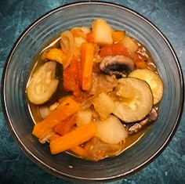
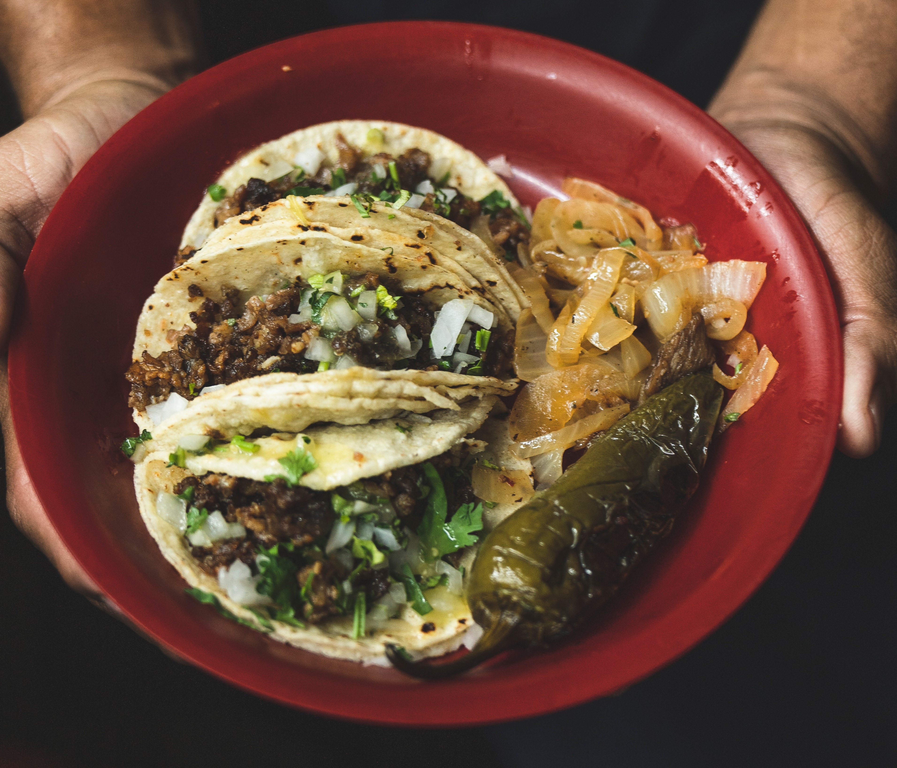
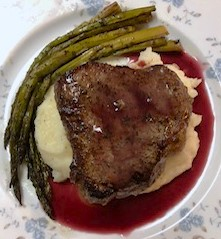

- Prepare vegetables: Cut 4 oz zucchini into 1/2 in slices. Peel 4 oz eggplant and cut into large dice. Slice 4 oz onion. Remove cores and seeds of 1 green bell pepper and cut into 1 in dice. Chop 1 garlic clove. Peel and seed 8 oz tomatoes and cut into large dice. Saute zucchini in little olive oil until half cooked. Remove from pan.
Saute eggplant in olive oil until half cooked. Remove from pan.Saute onions and peppers until half cooked.Add garlic and saute another minute. Combine all vegetables and seasonings(1oz chopped parsley, 1 bay leaf, 1/16 tsp dried thyme, salt and pepper)in a heavy saucepan. Cover and cook in a slow oven 325F for about 30 mins or til vegetables are tender. If veg etables are too juicy, cook uncovered on a rangetop for a few minutes to reduce. Adjust seasonings and serve hot or cold.

- Buy 1 or more cow tongues. Place into slow cooker on a rack with 1 in of water to prevent from drying out. Cover tongue with bay leaves, garlic, and half-sliced oranges or grapefruit. Cook on medium heat for 6 hrs or til tender and pulls apart. Prepare masa for tortillas by adding water to dry masa till a soft consistency. Dough should sitck together and form a ball while mixing. Let rest while cast-iron heats up. Grab golf-ball sized dough and flatten to desired length. Place on cast-iron pan and flip after a few seconds and flip once again for dough to balloon up. *If it doesn't balloon up your dough may be too dry or the heat may be too high. Make a green or red salsa depending on preference. Chop up cilantro and white onion for toppings and sliced limes to pour onto taco. Build tacos with tortilla, lengua, and preferred topppings.

- Season pork chops with salt and pepper. Heat up skillet with oil and place pork chops. Sear pork chops on each side and once done pour choice of red wine and cover till cooked. Peel russet potatoes and boil till cooked. Once cooked drain water and dry out potatoes in oven, around 5 mins, to draw out water moisture. Finely mash potatoes and add seasoning, butter, and garlic-infused milk to taste.Wash asparagus and cut off ends. Mix in a bowl with olive oil, salt and pepper.Saute in a pan until al dente. To make beurre rouge: combine dry red wine, red wine vinegar and shallots to pork chop pan with juices. Reduce until small amount remains then add butter to reduction under medium high heat. Whip until smooth and season to taste. Strain sauce if desired and plate.